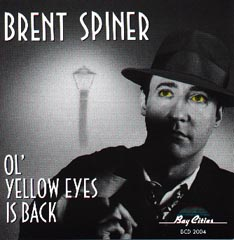

|
 No
episdio "Brothers", quando Lore
"acorda" depois de ter um novo chip de emoo
instalado por seu "pai", dr. Noonien Soong, ele comea
a cantar. Alis, da primeira vez que Lore apareceu na srie, no
episdio do primeiro ano "Datalore", ele tambm
cantou o trecho de uma msica. Talvez o roteirista tenha inserido
essas canes para utilizar os dons de cantor de Brent Spiner
(Data/Lore/Soong), que at j lanou CDs, entre os quais Ol'
Yellow Eyes is Back (foto), que contm clssicos dos anos
40. Numa das faixas, os vocais so feitos pelo grupo "Sunspots",
na verdade seus colegas de elenco da Nova Gerao Patrick
Stewart (Picard), Jonathan Frakes (Riker), LeVar Burton (La Forge)
and Michael Dorn (Worf).
A msica cantada por
Lore no episdio "Brothers" Abdullah
Bulbul Ameer (que voc j deve estar ouvindo), uma cano
popular com mais de um sculo de existncia. Embora muitos
acreditem que seu autor seja annimo, ela foi composta em 1877,
em Dublin, na Irlanda, pelo irlands Percy French. Com a imigrao
irlandesa para os Estados Unidos, a msica tornou-se popular
entre os americanos e geralmente cantada para as crianas.
A cano conta a
histria de dois valentes rivais, Abdula Bulbul Amir e Ivan
Skavinsky Skivar, respectivamente da antiga Prsia e da antiga Rssia.
Os dois um dia se cruzam e acabam se atracando numa sangrenta luta
que termina por levar ambos morte.
Como toda cano
popular que se perpetua pela tradio oral (como diz o ditado,
"quem conta um ponto aumenta um ponto"), existem vrias
verses diferentes de Abdullah Bulbul Ameer, com pequenas
variaes nos versos. Abaixo est uma delas, no original,
juntamente com uma traduo livre. Agora s acompanhar a
melodia e soltar a sua voz!
Abdullah Bulbul
Ameer
The sons of
the Prophet are brave men and bold
And quite unaccustomed to fear,
But the bravest by far in the ranks of the Shah,
Was Abdullah Bulbul Ameer
If you wanted a man to encourage
the van,
Or harass the foe from the rear,
Storm fort or redoubt, you had only to shout
For Abdullah Bulbul Ameer
This son of the desert in battle
aroused
Could split twenty men on his spear
A terrible creature when sober or soused
Was Abdullah Bulbul Ameer
Now the heroes were plenty and
well known to fame
In the troops that were led by the Czar,
And the bravest of these was a man by the name
Of Ivan Skavinsky Skivar
The ladies all loved him, his
rivals were few
He could drink them all under the bar
Come gallant or tank there was no one to rank
With Ivan Skavinsky Skivar
One day this bold Russian, he
shouldered his gun
And donned his most truculent sneer,
Downtown he did go where he tred on the toe
Of Abdullah Bulbul Ameer
"Young man", quote
Abdullah, "has life grown so dull
That you wish to end your career?
Vile infidel know, you have trod on the toe
Of Abdullah Bulbul Ameer."
"So take your last look at
the sunshine and brook
And send your regrets to the Czar
For by this I imply, you are going to die,
Count Ivan Skavinsky Skivar."
Said Ivan, "My friend, your
remarks in the end,
Will avail you but little, I fear.
For you never will survive to repeat them alive
Mr. Abdullah Bulbul Amir."
Then this bold Mameluke drew his
trusty skibouk,
Singing, "Allah! Il Allah! Al-lah!"
And with murderous intent he ferociously went
For Ivan Skavinsky Skivar
They parried and thrust, they
side-stepped and cussed,
Of blood they spilled a great part;
The philologist blokes, who seldom crack jokes,
Say that hash was first made on the spot
They fought all that night neath
the pale yellow moon;
The din, it was heard from afar,
And huge multitudes came, so great was the fame,
Of Abdullah and Ivan Skivar
As Abdullah's long knife was
extracting the life,
In fact he was shouting, "Huzzah!"
He felt himself struck by that wily Calmuck,
Count Ivan Skavinsky Skivar
The Sultan drove by in his
red-breasted fly,
Expecting the victor to cheer,
But he only drew nigh to hear the last sigh,
Of Abdullah Bulbul Ameer
Czar Petrovich, too, in his
spectacles blue
Rode up in his new crested car
He arrived just in time to exchange a last line
With Ivan Skavinsky Skivar
There's a tomb rises up where the
Blue Danube rolls,
And graved there in characters clear,
Is, "Stranger, when passing, oh pray for the soul
Of Abdullah Bulbul Ameer."
A splash in the Black Sea one
dark moonless night
Caused ripples to spread wide and far,
It was made by a sack fitting close to the back,
Of Ivan Skavinsky Skivar
A Muscovite maiden her lone vigil
keeps,
'Neath the light of the cold northern star,
And the name that she murmurs in vain as she weeps,
Is Ivan Skavinsky Skivar
Abdula Bulbul
Amir
Os filhos do
Profeta eram corajosos e destemidos
E no conheciam o medo
Mas de longe o mais corajoso no exrcito do X
Era Abdula Bulbul Amir
Se voc
quisesse um homem para incentivar a linha de frente
Ou fustigar o inimigo por trs,
Tomar um forte ou uma fortaleza, era s gritar
O nome de Abdula Bulbul Amir
Este filho do
deserto animava a batalha
Podia despedaar vinte homens com sua lana
Uma terrvel criatura, sbrio ou bbado,
Era Abdula Bulbul Amir
Ora, os heris
eram muitos e bem conhecidos
Nas tropas comandadas pelo Czar,
E o mais corajoso desses homens
Se chamava Ivan Skavinsky Skivar
Todas as damas
o adoravam, os rivais eram poucos
Ele os tragava todos no bar
No amor e na guerra, ningum chegava aos ps
De Ivan Skavinsky Skivar
Certo dia este
destemido russo pendurou sua arma do ombro,
Colocou no rosto seu olhar de escrnio mais
cruel
E foi para o centro da cidade, onde pisou no p
De Abdula Bulbul Amir
"Meu
jovem", disse Abdula, "sua vida ficou assim to chata
que voc deseja acabar com ela?
Desprezvel mpio, voc pisou no p
De Abdula Bulbul Amir"
"Ento,
olhe a luz do Sol e o riacho pela ltima vez
E envie seus psames ao Czar
Pois com isso quero dizer que voc vai morrer,
Conde Ivan Skavinsky Skivar"
Ivan disse:
"Meu amigo, receio que suas palavras, afinal,
No lhe tero muito proveito
Pois voc nunca sobreviver
Para repeti-las, sr. Abdula Bulbul Amir
Ento o
destemido mameluco sacou sua fiel adaga
Cantando "Al! Al! Al!"
E com sede de morte partiu para cima
De Ivan Skavinsky Skivar
Eles se
golpearam, se empurraram e se xingaram
Espirraram muito sangue;
Os fillogos, que raramente contam piada,
Dizem que a palavra "picadinho"
surgiu ali
Eles brigaram
a noite inteira sob a luz plida da Lua
O barulho podia ser ouvido de longe,
E uma enorme multido acorreu, to grande era
a fama
De Abdula e Ivan Skivar
Enquanto a
longa faca de Abdula fincava,
Na verdade ele j gritava "Huzzah!"
Sentiu ser golpeado pelo maligno
Conde Ivan Skavinsky Skivar
O sulto
apareceu, com seu pomposo traje vermelho
Esperando comemorar a vitria,
Mas ele se aproximou apenas para ouvir o ltimo
suspiro
De Abdula Bulbul Amir
O czar
Petrovich tambm, com seus culos azuis
Chegou em sua novssima carruagem
A tempo de trocar as ltimas palavras
Com Ivan Skavinsky Skivar
H uma tumba
onde o Danbio faz a curva
E l est gravado em letras ntidas
"Estranho, voc que por aqui passa, oh
reze pela alma
De Abdula Bulbul Amir"
Certa noite
sem lua, uma pancada nas guas do Mar Negro
Provocou ondas que se espalharam ao longe
Foi um saco jogado com o corpo de
De Ivan Skavinsky Skivar
Uma donzela
moscovita mantm solitria viglia
Sob a luz da fria estrela do norte
E o nome que ela em vo murmura, enquanto
chora,
o de Ivan Skavinsky Skivar
|